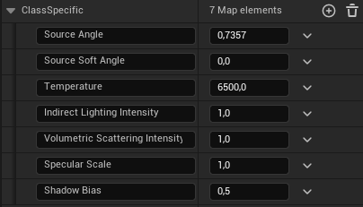

BP_LightSnapshotr¶
RYM_Utilities
Самостоятельный блюпринт управления и анимации переходов между пресетами (далее "снэпшот") световых схем.
Общие параметры¶
Initialize¶
Заполняет списки акторов и их компонентов, с которыми работает инструмент, а также собирает их параметры в два списка:
- Light Properties Initial - снэпшот параметров, с которыми источники были добавлены при инициализации.
- NewSnapshot - первый, и пока единственный, пользовательский снэпшот с названием по умолчанию. Изначально будет полностью совпадать с Light Properties Initial, но связи между ними нет.
Add Selected Actors¶
Добавит компоненты акторов, добавленных в список Actors Selection
Remove Selected Actors¶
Удалит из списков компоненты акторов, добавленных в список Actors Selection.
Refresh Lists¶
Обновит списки компонентов, устраняя те, которых более не существует на сцене. Лучше не пренебрегать, если удаляли источники не пользуясь кнопкой Remove Selected Actors.
Clear Actors and Components Lists¶
Очищает глобальные (снэпшоты не трогает) списки акторов и компонентов, но больше не делает ничего.
Full Reset¶
Полная очистка, в том числе снэпшотов.
Actors Selection¶
Список акторов на добавление/удаление для обработки инструментом.
Light Properties initial¶
Снэпшот "дефолтных" настроек источников, с которыми они были добавлены в инструмент.
Снэпшоты параметров¶
Light Properties Snapshots¶
Параметры со словом Multiplier в названии работают, ожидаемо, как множители соответствующих параметров всех источников света, принадлежащих данному снэпшоту1
Использование нулевых значений приблизит значения параметров источников к нулю, но не сделает равными ему. Поэтому, кажущиеся отключенными параметры, можно исправить множителем большого значения.
ColorShift¶
Подраздел ColorShift работает аналогично предыдущим параметрам за исключением Hue. Изменение оттенка является именно что сдвигом значения в зацикленном диапазоне.
Прочие общие параметры¶
Разумеется, снэпшот так же запоминает и управляет световыми каналами и активацией отбрасывания теней всех обрабатываемых источников.
Индивидуальные параметры источников снэпшота¶
В идеальном случае пользователю не придётся прибегать к редактированию параметров источника внутри снэпшота индивидуально, так как в текущей реализации это хоть и поддерживается, может быть весьма неудобно.
Ниже будут приведены пояснения только к тем параметрам, изменение которых допустимо или может быть необходимо.
Intensity¶
Изменение параметра интенсивности свечения данного источника напрямую, в обход группового множителя и нижней границы. Включается активацией параметра Override Intensity
Override Size¶
Активирует аналогичное прямое использование классозависимых параметров, отвечающих за размер источников, таких как Source Radius, Source Soft Radius, Source Length, Source Width и Source Height.
Class Specific¶
Словарь соответствий параметр-значение (float) автоматически заполняющийся в зависимости от класса источника, в связи с чем, содержимое может варьироваться от источника к источнику. Что есть у RectLight может не быть у SpotLight и т.п.

Color¶
Цвет источника. Прямое изменение цвета в обход групповых надстроек, включается активацией параметра Override Color.
Прочие индивидуальные параметры¶
Light Channels, Cast Shadows работают аналогично, обходя групповые надстройки при активации соответствующих Override-параметров. Transforms в подобном не нуждается и сразу записывается напрямую.
Находящийся ниже список компонентов, выглядящий, возможно, бессмысленно на первый взгляд, ни в коем случае не трогать. Пользователю он не нужен, но присутствовать для корректной работы должен.
Условия выделения группы¶
Bypass Filtering¶
Активация этой настройки заставит инструмент пропускать стадию фильтрации акторов и компонентов при добавлении новых. Всё равно что сказать ему "Бери всех".
Exclude Skylights¶
Настройка для исключения сбора Skylight компонентов. Наличествует обособленно из-за специфики их реализации в движке. По умолчанию включена.
Select by Layer¶
Выбирать компоненты, чьи акторы находятся на указанном слое.
Layer Name¶
Название слоя для фильтра выше.
Select by Actor Tag¶
Выбирать компоненты, чьи акторы содержат заданный тег.
Tag¶
Тег, используемый фильтром выше.
Select by Actor Prefix Name¶
Выбирать компоненты, название акторов которых содержит заданный префикс.
Name Prefix¶
Префикс, используемый фильтром выше.
Анимация¶
Play, Stop¶
Кнопки запуска и остановки воспроизведения анимации перехода от текущей световой схемы к выбранной.
Use Cheap Transition ✅¶
Переключает логику анимации перехода на использование дешёвой по производительности версии. В таком переходе между снэпшотами будут меняться только цвет и интенсивность свечения источников. По умолчанию активировано.
Anim Curve¶
Используемый ассет кривой интерполяции для анимации. Определяет плавность течения трансформаций.
Snapshot to Transition To¶
Снэпшот к которому осуществляется переход от текущего.
Transition Anim Time¶
Желаемая длительность анимации в секундах.
Use Tween Snapshot for Animation ✅¶
Переключает использование промежуточного снэпшота для перехода.
Пояснение
В активированном состоянии анимация длящаяся 1 сек. будет работать следующим образом:
A--0.5s→B--0.5s→C, где A и C - начальный и конечный снэпшоты, а B - промежуточный (Tween).
\(\quad\)То есть, если мы переходим из красного цвета в синий, то переход будет осуществлён через фазу цвета переходного снэпшота, например белый.
Tween Snapshot Selection¶
Промежуточный снэпшот для анимации перехода.
-
"Данному снэпшоту" так как инструмент обрабатывает ссылки на компоненты сохранённые в снэпшоте, сверяя их с общим списком компонентов, зарегистрированных в инструменте. В случае, если источник не будет найден в снэпшоте, параметры его изменены не будут. ↩